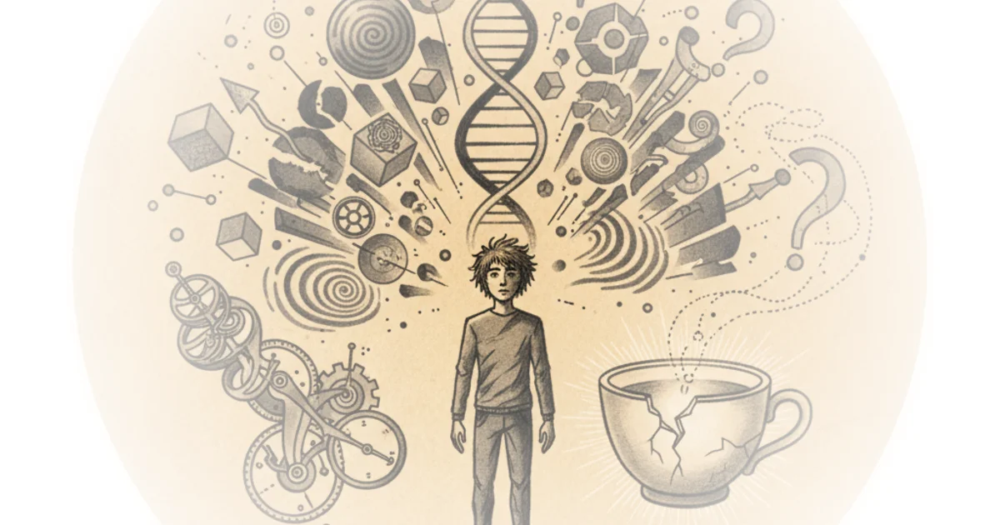

Quantum physics needs philosophy, but shouldn't trust it Slavoj Žižek · ŽIŽEK GOADS AND PRODS ·Dec 10, 2025 · 13 min read · Science
Carney’s pipeline deal lifts up alberta and demotes bc to second-class status The Walrus · ·Dec 8, 2025 · 14 min read · Science
New analysis. How corporate overlords are unlawfully ignoring future climate impacts Dave Borlace · Just Have a Think ·Dec 7, 2025 · 11 min read · Science
Are we alone in the universe? - Hank green Alex O'Connor · Cosmic Skeptic ·Dec 7, 2025 · 137 min read · Science
Siren song: Digging into the lure of food ecomodernism Chris Smaje · Chris's Substack ·Dec 7, 2025 · 14 min read · Science
Comparing climate models with observations Andrew Dessler & Zeke Hausfather · The Climate Brink ·Dec 6, 2025 · 10 min read · Science
Shocking betrayal: Why progressives are ditching climate laws and dooming the planet Various · Energy Bad Boys ·Dec 6, 2025 · 10 min read · Science
Analysis of the latest acip meeting at the cdc: Vaccines—and rigorous science—are increasingly… Jeremy Faust · Inside Medicine ·Dec 5, 2025 · 11 min read · Science
Philosophy & theory roundup - December 5, 2025 Mona Mona · Philosophy Publics ·Dec 5, 2025 · 3 min read · Science
The week observed: December 5, 2025 Joe Cortright · City Observatory ·Dec 5, 2025 · 7 min read · Science
The man who accidentally discovered antimatter Derek Muller · Veritasium ·Dec 5, 2025 · 31 min read · Science 
What i really think is going on with president recent tests Jeremy Faust · Inside Medicine ·Dec 4, 2025 · 11 min read · Science
Journalists win a key battle over AI in the newsroom Brian Merchant · ·Dec 3, 2025 · 13 min read · Science
How close is the worst case scenario?: Crash course futures of AI #3 Crash Course · Crash Course ·Dec 3, 2025 · 10 min read · Science
What to expect from this week's u.s. Vaccine meeting Katelyn Jetelina · Your Local Epidemiologist ·Dec 3, 2025 · 10 min read · Science
Two steppes forward, one step back: Parsing our indo-european past Razib Khan · Unsupervised Learning ·Dec 3, 2025 · 13 min read · Science
Scaling bio 005: Eli lilly's aliza Apple on building collaborative AI infrastructure for drug… Zahra Khwaja · ·Dec 2, 2025 · 19 min read · Science
AlphaFold - the most important AI breakthrough ever made Karoly Zsolnai-Feher · Two Minute Papers ·Dec 2, 2025 · 21 min read · Science
Immigrants of imperial Rome: Pompeii’s genetic census of the doomed Razib Khan · Unsupervised Learning ·Dec 1, 2025 · 12 min read · Science